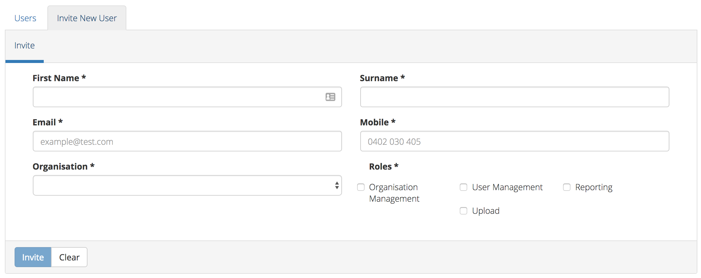
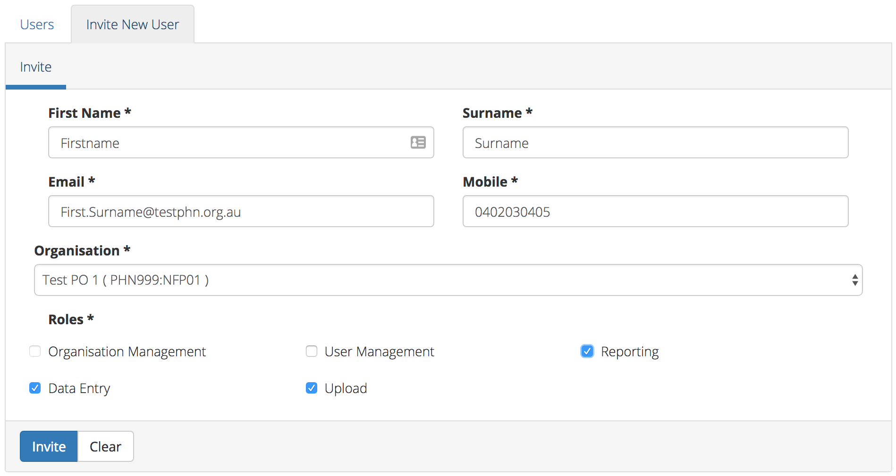
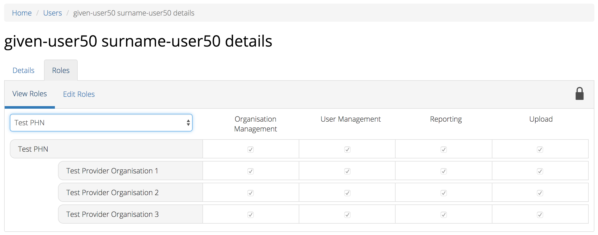
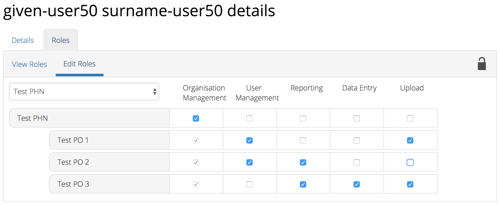

Users¶
You will only be able to see the Users tab if you have been assigned the ‘User Management’ role.
If you don’t have access to the Users tab and you believe you should, please contact someone in your provider organisation or provider organisation’s PHN who has the ‘User Management’ role.
If you are unsure who has the ‘User Management’ role please email the PMHC Helpdesk at support@pmhc-mds.com
After navigating to the Users tab, you will be presented with a list of the users that are assigned to the organisations for which you have the ‘User Management’ role.
Users Roles¶
Access to the PMHC MDS is based around roles. The following table provides a summary of each of the roles that currently exist within the PMHC MDS:
| Role | Tasks allowed |
|---|---|
| Organisation Management | A user with the Organisation Management role for a PHN can manage provider organisations for that PHN |
| User Management | A user with the User Management role for an organisation can manage user accounts for that organisation |
| Upload | A user with the Upload role can upload data to the associated organisation |
| Reporting | A user with the Reporting role can download data from the associated organisation |
Each role allows a user to perform specific tasks. A user can have more than one role. Each role is granted for a user against an organisation. An organisation can either be a Primary Health Network or a provider organisation. If a user is granted a role for a Primary Health Network (PHN) they will also have this role for any provider organisation’s of that PHN. A user can be invited to have a role at more than one organisations.
What users see once they are logged in will depend upon what roles they have been assigned. The table below lists the tabs that will be shown for each role:
| Role | Tab |
|---|---|
| Organisation Management | Organisations |
| User Management | Organisations, Users |
| Upload | Upload |
| Reporting | Data Extraction |
| All users | SLK |
Finding a user¶
You can sort and filter the listed users through the Users tab.
Sort the listed users by simply clicking on the column header. Alternately you can click on the arrow beside a column header for more sort options, as follows:
- Sort Ascending
- Sort Descending
- Remove Sort
- Hide Column
To filter the listed users:
- Click the grey ‘Filters’ button.
- Start typing in an edit box now displayed under the column headers.
- To remove the filter, click the grey cross within the edit box beside any entered text.
Viewing a User’s details¶
You can view a user’s details through the user tab, by following these steps:
- Navigate to the Users tab.
- Click on the user’s name in blue displayed within the table list.
A page will display showing the user’s details and the Users Roles they have at particular organisations.
Adding a user¶
Note: PHNs can devolve user management authority to one or more users in a provider organisation so that the provider organisation can manage their own logins, or a PHN can choose to keep user management authority at the level of the PHN requiring each provider organisation to contact the PHN when they need a new user added.
The first step to adding a new user is to invite the potential user to the PMHC MDS. You can invite a new user through the Users tab, by following these steps:
Navigate to the Users tab.
Click the ‘Invite New User’ tab.
Complete all the mandatory fields marked with an * in the ‘Invite User’ form. User’s can be given multiple Users Roles at invitation, or extra roles can be added after the user has access to the system.
Click the blue ‘Invite’ button.
You will receive confirmation that the user has been sent an email to invite them to the PMHC MDS. They will also be sent an SMS containing a verification code. The user will need to follow the instructions in the email before they can gain access to the system. This invitation will be valid for 7 days.
When the user has accepted the invitation you will be sent an email to let you know.

Adding an existing user¶
Note: An existing user must have completed the required steps for Accepting an invitation to become a PMHC MDS User from their initial PMHC MDS invitation before they can be added again.
Before adding an existing user please ensure you have the same email and mobile number as their current PMHC MDS Profile. By ensuring these are identical, the system will automatically pick up if a user already exists in the PMHC MDS.
You can invite an existing user through the Users tab, by following these steps:
Navigate to the Users tab.
Click the ‘Invite New User’ tab.
Complete all the mandatory fields marked with an * in the ‘Invite User’ form, ensuring these are the same details as their existing PMHC MDS Profile. Existing user’s can be given multiple Users Roles at invitation, or extra roles can be added later.
Click the blue ‘Invite’ button.
You will receive confirmation that the roles have been added to the existing user.
You will need to notify the user that they have been added to the organisation and confirm their authorised roles. The system will not automatically do this.
Accepting an invitation to become a PMHC MDS User¶
To become a PMHC MDS user you will be sent an invitation by email and a verification code via SMS. In order to gain access to the PMHC MDS you will need to accept this invitation within 7 days, by following these steps:
Click on the link contained in the email. You will be shown a page where you will need to input the SMS you have been sent.

Input your verification code.
Click ‘Submit’.
You will be shown a page where you need to choose a password.

Enter your password.
Confirm your password.
Click ‘Submit’.
Your account will now be activated.

Navigate to https://pmhc-mds.net/ and follow the Logging In instructions.
View an existing users roles¶
A user can have more than one role. Each role is granted for a user against an organisation you have the User Management Role at.
You can edit and assign extra roles to an existing user by following these steps:
Navigate to the Users tab.
Click on the user’s name in blue displayed within the table list.
Click the ‘Roles’ tab to show the users assigned roles.
Choose the PHN or Provider Organisation from the selection box to view the users roles at that organisaiton.

A tick displays the user currently has this role assigned at the relevant organisation.
Editing an existing users roles¶
A user can have more than one role. Each role is granted for a user against an organisation you have the User Management Role at.
You can edit and assign extra roles to an existing user by following these steps:
Navigate to the Users tab.
Click on the user’s name in blue displayed within the table list.
Click the ‘Roles’ tab.
Click the ‘Edit Roles’ tab.
Select the PHN from the Organisation drop down list
A tick displays the user currently has this role assigned at the relevant organisation.
Add a role by clicking the empty checkbox. Remove a role by clicking the ticked checkbox. Multiple roles can be assigned at the PHN and these roles are shown as blue tickets.
Please note: roles are automatically inherited from a higher organisation and displayed as a light grey tick. Inherited roles can not be edited or deleted by a User Management role at the Provider Organisation level.
All changes are automatically saved.
You will need to notify the user of these role changes. The system will not automatically do this.